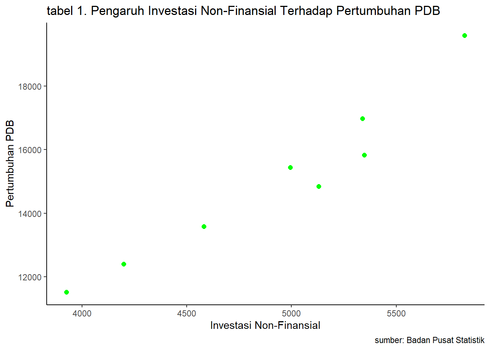
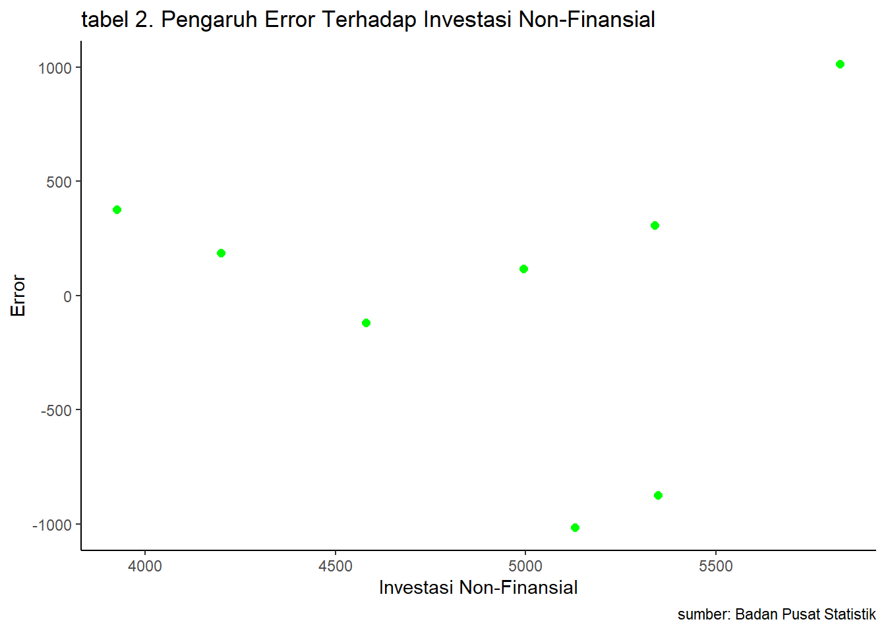
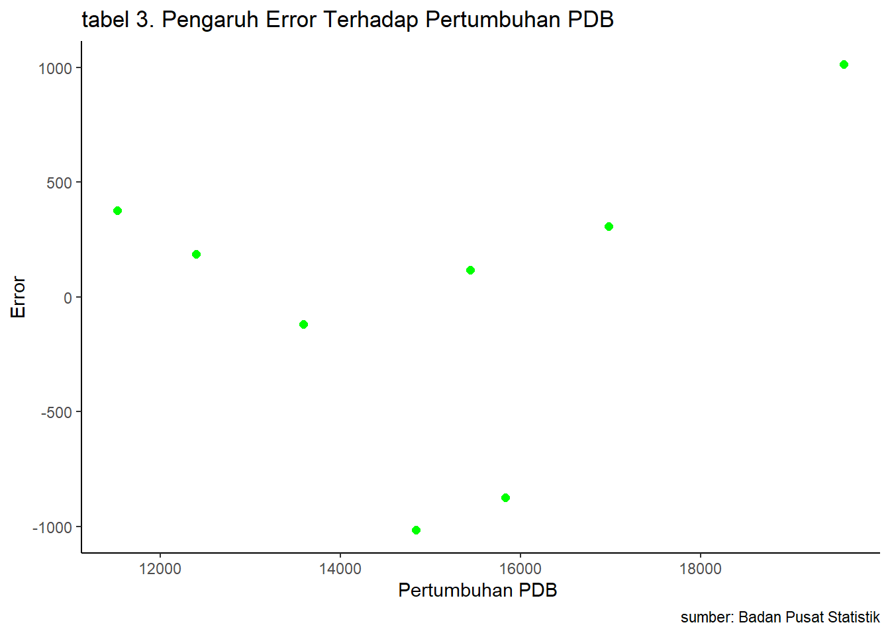

library(tidyverse)
library(readxl)
library("ggplot2")
library("dplyr")Pengaruh Investasi Non-Finansial Terhadap Pertumbuhan PDB Indonesia Tahun 2015-2022
Metodologi Penelitian Politeknik APP Jakarta

1 Pendahuluan
1.1 Latar belakang
Penanaman modal jangka panjang dalam bentuk pembelian saham, obligasi, properti, dan surat berharga lain yang merupakan bentuk pengadaan aktiva lengkap untuk memperoleh keuntungan dapat meningkatkan nilai aset atau kekayaan. Saat ini, investasi merupakan bentuk penempatan dana dengan cara memelihara, menaikkan nilai, atau memberikan return yang positif. Keuntungan yang diperoleh saat melakukan investasi sangat beragam, mulai dari keuntungan finansial seperti bunga dan dividen, namun bisa juga berbentuk keuntungan non-finansial seperti prestise atau pengalaman (Janardana, 2023).
Menurut Badan Pusat Statistik (BPS), penggunaan investasi sangat dibutuhkan oleh semua sektor produksi guna meningkatkan timbulnya nilai tambah dan memacu laju pertumbuhan ekonomi. Pelaksanaan investasi memerlukan peran lembaga keuangan sebagai perantara yang menghubungkan penyedia dana (sektor surplus) dengan sektor yang membutuhkan penyedia dana (sektor defisit). Pada kebijakan sebelumnya, peran lembaga keuangan kurang menonjol. Penyedia dana hanya melakukan investasi finansialnya pada instrumen-instrumen yang masih sangat terbatas seperti tabungan dan deposito, sehingga dana belum dimanfaatkan secara optimal untuk membiayai investasi. Disisi lain, para investor (sektor produksi) masih mengalami kesulitan dalam memperoleh sumber dananya.
Pemerintah mulai melakukan reformasi ekonomi khususnya di bidang perbankan, seperti penentuan tingkat suku bunga. Dengan begitu, pemilik dana dapat melakukan investasi finansialnya dengan lebih luas dan menarik. Meningkatnya kegiatan pasar modal, menciptakan alternatif tambahan dalam berinvestasi finansial yang bersifat langsung. Dengan perkembangan tersebut, arus finansial dari sektor surplus ke sektor defisit melalui instrumen-instrumen yang ada menjadi lebih kompleks. Dengan demikian, kegiatan produksi dan distribusi barang dan jasa dapat dihasilkan oleh perekonomian nasional yang telah disajikan secara berkala dalam data Produk Domestik Bruto (PDB).
1.2 Ruang lingkup
Penelitian ini membahas mengenai pengaruh investasi non-finansial terhadap pertumbuhan PDB Indonesia. Dalam penelitian ini, penulis mengambil objek penelitian yang bersumber dari Badan Pusat Statistik (BPS) dalam laporan neraca arus dana tahunan. Ruang lingkup penelitian ini melibatkan 2 variabel utama, yakni data investasi non-finansial dan pertumbuhan Produk Domestik Bruto (PDB) Indonesia. Data yang digunakan merupakan data yang bersifat time series, yaitu dalam kurun waktu 2015-2022 yang disajikan dalam bentuk satuan triliun (Rp). Data tersebut menjadi acuan objek dalam melakukan penelitian ini.
1.3 Rumusan masalah
Berdasarkan uraian pada latar belakang, maka telah diputuskan jenis masalah pokok yang ada pada penelitian ini adalah :
- Apakah investasi non-finansial berpengaruh terhadap pertumbuhan PDB di Indonesia?
- Bagaimana hubungan antara investasi non-finansial terhadap pertumbuhan PDB di Indonesia?
1.4 Tujuan dan manfaat penelitian
Didasari dengan latar belakang dan jenis permasalahan yang ada, maka tujuan dari penelitian ini adalah untuk mengetahui pengaruh investasi non-finansial terhadap pertumbuhan PDB Indonesia dan mengetahui bagaimana hubungan antara investasi non-finansial terhadap pertumbuhan PDB di Indonesia.
Adapun manfaat dari penelitian ini, diantaranya :
Manfaat Teoretis
Hasil penelitian ini diharapkan dapat berguna bagi banyak pihak, memberikan kontribusi dalam pengembangan teori dan konsep yang telah ada serta sebagai penambah wawasan dan ilmu pengetahuan terkait indikator ekonomi.
Manfaat Praktis
a. Bagi penulis
Diharapkan dapat bermanfaat bagi penulis dalam meningkatkan kemampuan analisis dan bermanfaat bagi para pembaca yang menggunakan penelitian ini sebagai bahan referensi dengan topik terkait maupun jenis metode penelitian yang digunakan. Sehingga, dengan secara tidak langsung penelitian ini mengalami penyempurnaan dengan karya lain dan dapat berkembang secara terus-menerus.
b. Bagi Instansi Terkait
Dengan adanya penelitian ini, diharapkan dapat dijadikan sebagai acuan maupun sebagai bahan masukan untuk terus mengembangkan segala bentuk investasi yang ada di Indonesia agar jumlah PDB yang dimiliki Indonesia dapat terus mengalami perkembangan.
1.5 Package
Packages yang digunakan sebagai pendukung regresi univariat dalam pengolahan penelitian ini, antara lain sebagai berikut :
2 Studi pustaka
Investasi Non-Finansial, merupakan bentuk pengeluaran atau komitmen mengenai sumber daya yang tidak melibatkan instrumen keuangan atau tidak diukur dalam satuan uang maupun aset finansial. Investasi non-finansial mencangkup alokasi sumber daya untuk tujuan-tujuan yang bersifat non-moneter, dengan fokus terhadap manfaat sosial, pribadi, maupun lingkungan. Bentuk Investasi ini tidak menghasilkan pengembalian dalam bentuk keuntungan finansial langsung, tetapi dapat membawa dampak positif pada kualitas hidup, pengembangan pribadi, atau masyarakat secara keseluruhan. Menurut Sugiyono (2016) investasi non-finansial adalah investasi yang dilakukan dengan cara membeli barang modal seperti mesin, gedung, tanah, serta investasi pada sumber daya manusia seperti pelatihan dan pengembangan karyawan.
Produk Domestik Bruto (PDB), merupakan perubahan laju perekonomian suatu negara yang dihitung dalam periode tahunan (Muhammad, 2023). PDB dijadikan sebagai alat ukur untuk menganalisis pertumbuhan, mengukur kemakmuran relatif dan berkontribusi dalam pembuatan kebijakan ekonomi suatu negara (Nur, 2023). Pertumbuhan Produk Domestik Bruto (PDB) mengacu pada peningkatan nilai total barang dan jasa yang dihasilkan oleh suatu negara selama periode waktu tertentu. Pertumbuhan PDB sering diukur dalam presentase dan memberikan indikasi tentang kesehatan ekonomi suatu negara.
3 Metode penelitian
3.1 Data
Berikut adalah data yang digunakan sebagai objek penelitian. Data yang digunakan meliputi data investasi non-finansial dan pertumbuhan PDB Indonesia tahun 2015-2022 dalam satuan triliun (Rp).
| Tahun | Investasi Non-Finansial (X) | Pertumbuhan PDB (Y) |
|---|---|---|
| 2015 | 3.926,19 | 11.526,33 |
| 2016 | 4.199,07 | 12.401,73 |
| 2017 | 4.581,21 | 13.589,83 |
| 2018 | 5.129,84 | 14.838,76 |
| 2019 | 5.348,29 | 15.832,66 |
| 2020 | 4.994,91 | 15.443,35 |
| 2021 | 5.339,00 | 16.976,69 |
| 2022 | 5.826,65 | 19.588,45 |
Penelitian ini menggunakan data sekunder dengan bentuk data time series investasi non-finansial (X) dan pertumbuhan PDB (Y) Indonesia tahun 2015-2022. Data yang dipakai merupakan data yang diperoleh dan telah diolah melalui sumber Badan Pusat Statistik (BPS) Indonesia.

#Import Dataset
library(readxl)
dat<-read_excel("C:/Metopel_2023/UAS METOPEL/data UAS metopel.xlsx")
dat# A tibble: 8 × 3
Tahun X Y
<dbl> <dbl> <dbl>
1 2015 3926. 11526.
2 2016 4199. 12402.
3 2017 4581. 13590.
4 2018 5130. 14839.
5 2019 5348. 15833.
6 2020 4995. 15443.
7 2021 5339 16977.
8 2022 5827. 19588.X = Investasi Non-Finansial
Y = Pertumbuhan PDB
setwd("C:/Metopel_2023/UAS METOPEL")
dat<-read_excel("C:/Metopel_2023/UAS METOPEL/data UAS metopel.xlsx")
library(readxl)
library("ggplot2")
library("dplyr")
reg1<-lm(Y~X,data=dat)
ggplot(data=dat,aes(x=X,y=Y)) +
geom_point(color="green",size=2) +
scale_color_viridis_c() +
labs(title="tabel 1. Pengaruh Investasi Non-Finansial Terhadap Pertumbuhan PDB",
x="Investasi Non-Finansial",
y="Pertumbuhan PDB",
caption = "sumber: Badan Pusat Statistik") +
theme_classic()
library(readxl)
dat$u<-resid(reg1)
ggplot(data=dat,aes(x=X,y=u)) +
geom_point(color="green",size=2) +
scale_color_viridis_c() +
labs(title="tabel 2. Pengaruh Error Terhadap Investasi Non-Finansial",
x="Investasi Non-Finansial",
y="Error",
caption = "sumber: Badan Pusat Statistik") +
theme_classic()
library(readxl)
dat$u<-resid(reg1)
ggplot(data=dat,aes(x=Y,y=u)) +
geom_point(color="green",size=2) +
scale_color_viridis_c() +
labs(title="tabel 3. Pengaruh Error Terhadap Pertumbuhan PDB",
x="Pertumbuhan PDB ",
y="Error",
caption = "sumber: Badan Pusat Statistik") +
theme_classic()
3.2 Metode analisis
Metode analisis yang digunakan dalam penelitian ini adalah regresi univariat atau Ordinary Least Square (OLS) yang memiliki 1 variabel independen, yaitu investasi non-finansial dan 1 variabel dependen, yaitu pertumbuhan PDB. Tujuan dengan adanya penelitian ini adalah untuk mengidentifikasi hubungan antara investasi non-finansial (X) terhadap pertumbuhan PDB Indonesia (Y). Spesifikasi yang dilakukan adalah sebagai berikut :
\[ y_{t}=\beta_0 + \beta_1 x_t+\mu_t \]
Di mana \(y_t\) adalah indikator Y dan \(x_t\) adalah indikator X. Dengan ketentuan Y adalah Pertumbuhan PDB dan X adalah Investasi Non-Finansial.
4 Pembahasan
4.1 Pembahasan masalah
| Variable | Coefficient | Std.Error | t-value | Prob(.) |
|---|---|---|---|---|
| Intercept | -4193.7605 | 2113.8802 | -1.984 | 0.0945 |
| X | 3.9077 | 0.4267 | 9.158 | 9.54e-05 |
| R squared | 0.9332 | |||
| Adjusted R-Squared | 0.9221 | |||
| F-Statistic | 83.88 | |||
| Prob (F-Statistic) | 9.54e-05 |
Hasil regresi yang diperoleh dimasukkan ke dalam rumus persamaan, sehingga memperoleh :
$$Y = (-4193.7605) + 3.9077X$$
Keikutsertaan investasi non-finansial turut berkontribusi dan menghasilkan pengaruh yang positif pada pertumbuhan Produk Domestik Bruto (PDB) di Indonesia, dilihat dari variabel X yang menghasilkan nilai positif. Jika diasumsikan pada setiap kenaikan kontribusi investasi non-finansial sebesar 1, maka nilai pertumbuhan PDB akan meningkat sebesar 3.9077. Tetapi jika kontribusi investasi non-finansial = 0, maka pertumbuhan PDB akan menurun sebesar -4193.7605%.
Nilai Adjusted R-Squared 0.9221 menunjukkan bahwa sebesar 92.21% variabel dependen dapat dijelaskan oleh model regresi. Nilai F-Statistic yang tinggi, yaitu sebesar 83.88 dan nilai p-value yang rendah, yaitu sebesar 9.54e-05 menunjukkan bahwa model secara keseluruhan memiliki kecenderungan yang signifikan. Nilai p-value yang rendah pada variabel X juga menunjukkan bahwa variabel tersebut dapat berpengaruh signifikan terhadap variabel Y. Sehingga dapat disimpulkan bahwa kontribusi investasi non-finansial memiliki pengaruh yang signifikan terhadap pertumbuhan Produk Domestik Bruto (PDB) di Indonesia.
4.2 Analisis masalah
Diperoleh hasil regresi, sebagai berikut :
library(readxl)
dat<-read_excel("C:/Metopel_2023/UAS METOPEL/data UAS metopel.xlsx")
reg1<-lm(Y~X,data=dat)
summary(reg1)
Call:
lm(formula = Y ~ X, data = dat)
Residuals:
Min 1Q Median 3Q Max
-1013.2 -306.9 152.8 325.0 1013.6
Coefficients:
Estimate Std. Error t value Pr(>|t|)
(Intercept) -4193.7605 2113.8802 -1.984 0.0945 .
X 3.9077 0.4267 9.158 9.54e-05 ***
---
Signif. codes: 0 '***' 0.001 '**' 0.01 '*' 0.05 '.' 0.1 ' ' 1
Residual standard error: 720.7 on 6 degrees of freedom
Multiple R-squared: 0.9332, Adjusted R-squared: 0.9221
F-statistic: 83.88 on 1 and 6 DF, p-value: 9.54e-05Pada setiap kenaikan kontribusi investasi non-finansial yang diasumsikan dengan nilai 1, maka mampu meningkatkan pertumbuhan PDB sebesar 3.9077. Tetapi, apabila kontribusi investasi non-finansial = 0, maka pertumbuhan PDB akan menurun sebesar 4193.7605.
5 Kesimpulan
Berdasarkan hasil penelitian yang dilakukan melalui sistem regresi univariat atau Ordinary Least Square (OLS), dapat disimpulkan bahwa investasi non-finansial berpengaruh terhadap pertumbuhan Produk Domestik Bruto (PDB) di Indonesia. Hasil analisis menunjukkan bahwa setiap kenaikan kontribusi investasi non-finansial dengan nilai sebesar 1, dapat memberi dampak positif terhadap pertumbuhan Produk Domestik Bruto (PDB) dengan nilai sebesar 3.9077. Namun, apabila kontribusi sektor tersebut mengalami penurunan mencapai nilai nol (0), maka akan berdampak negatif terhadap pertumbuhan Produk Domestik Bruto (PDB) karena mengakibatkan penurunan nilai sebesar 4193.7605. Dengan demikian, adanya kontribusi investasi non-finansial disamping investasi finansial dapat saling berkontribusi dalam meningkatkan pertumbuhan PDB Indonesia guna meningkatkan sarana dan prasarana negara, meningkatkan pembangunan, dan perkembangan taraf hidup masyarakat khususnya di negara berkembang.
6 Referensi
Bizhare.id. (2023, September 8). Apa Itu Investasi: Pengertian, Jenis, dan Contohnya. Bizhare. https://www.bizhare.id/media/investasi/apa-itu-investasi
Kompas.com. (2023, Desember 6). Pengertian Pertumbuhan Ekonomi, Perhitungan, dan Faktor Penentunya. KOMPAS.com. https://money.kompas.com/read/2023/12/06/141207026/pengertian-pertumbuhan-ekonomi-perhitungan-dan-faktor-penentunya
Kompas.com. (2023, Juli 17). PDB Adalah: Pengertian, Komponen, Manfaat, dan Cara Menghitungnya. KOMPAS.com. https://money.kompas.com/read/2023/07/17/235431926/pdb-adalah-pengertian-komponen-manfaat-dan-cara-menghitungnya
Badan Pusat Statistik Indonesia. (2 Oktober 2020). Neraca Arus Dana Indonesia Tahunan 2015-2019. Diakses pada 20 Januari 2024, dari https://www.bps.go.id/id/publication/2020/10/02/9e780384e4d543572d7153d7/neraca-arus-dana-indonesia-tahunan-2015-2019.html
Badan Pusat Statistik Indonesia. (1 Oktober 2021). Neraca Arus Dana Indonesia Tahunan 2016-2020. Diakses pada 20 Januari 2024, dari https://www.bps.go.id/id/publication/2021/10/01/36f398358b21c02199a34118/neraca-arus-dana-indonesia-tahunan-2016-2020.html
Badan Pusat Statistik Indonesia. (29 September 2023). Neraca Arus Dana Indonesia Tahunan 2018-2022. Diakses pada 20 Januari 2024, dari https://www.bps.go.id/id/publication/2023/09/29/4e5a8d9780173f173a44a753/neraca-arus-dana-indonesia-tahunan-2018-2022.html